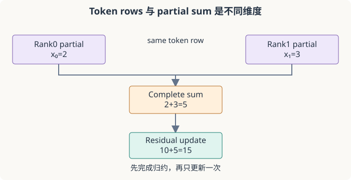
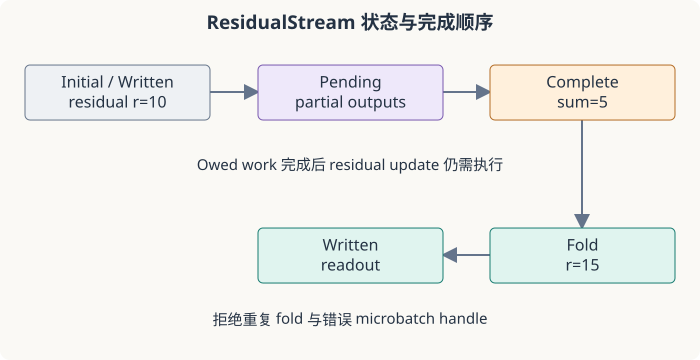

第 52 章 · SGLang 内核与存储
Layer Boundary：布局契约、延迟归约与 Residual Stream
Attention、FFN 与 MoE 之间如何保证 token rows、partial sums 和 residual 更新正确衔接？
Attention、FFN 与 MoE 之间如何保证 token rows、partial sums 和 residual 更新正确衔接？
1. 不是另一个 Transformer layer
模型模块执行 attention/projection、activation、expert routing；boundary 负责 producer output 到 consumer input 的归约、row move、residual update 与 readout。相邻 mixer/FFN 或更复杂 branch 同样使用契约。该接口是固定快照内部实现，不是稳定插件 API。
2. Layout 与 SumGroup 分离
Layout.sharded 描述 ATTN_DP、ATTN_CP、ATTN_TP 上不同 token rows，省略 size-one axes；row order 和 padding 来自 batch metadata。它不是 hidden-dimension DTensor placement。SumGroup 描述 partial sum 应在哪个 group 完成，与 token rows 独立。

3. Partial sum 必须且只完成一次
教学 residual r=10，rank0 contribution=2、rank1=3，正确结果 r+2+3=15。若各 rank 先加入 r 再 all-reduce，则25，重复计算 residual。若忘记另一 rank，则12。ProducerReduction.ALWAYS_PARTIAL 将 owed sum 交下一 stage；EXIT_SCOPED 可以在 exit 完成或继续 handoff，具体由契约约束。
4. ResidualStream 三态
Initial 无 residual/contribution；Written 有 residual、无 pending；Pending 持有 contribution 与可能的 residual。prepare 先完成 owed work、应用 producer update、再 readout。OwedOutput 是 opaque handle，不能当普通 tensor 随意使用。对象身份检查能发现错传 microbatch，但不能检测完整 tensor 的 in-place 修改。

5. 融合与分布式通信
All-reduce 完成相同 rows 的 partial sums；reduce-scatter 在归约同时分配 rows；all-gather 拼接合法 token shards。row order 必须与 batch mapping 一致。融合 residual/add/norm 可少读写，但不得丢失 sum 或重复 update。MoE EP dispatch/combine 是 compute 内部，不等于 boundary 的 output reduction。
6. 源码阅读顺序
layout.py 识别 rows 与 sum group，contracts.py 声明 producer/consumer，boundary.py bind_entry/bind_exit，residual helpers 管理 per-forward 状态。complete_output 只完成通信而不 fold；fold 完成贡献并更新 residual；set_written 替换状态前需确保没有被丢弃的 pending work。
7. 实验与验收
用单 rank reference 比较跨 rank output；测试不同 rows、padding、CP 顺序、空 batch、handoff 与重复完成、错误 microbatch identity。对融合与 unfused 路径比较输出和通信量，真实 collectives 需要多卡测试。
8. 交互：逐步检查机制
Layer Boundary 教学实验
Pending：r=10，partials=[2,3]；还不能读取完整输出。
Complete：sum=5，仅完成一次；residual update 仍未执行。
Fold + read：r+5=15；状态变 Written，再做 consumer readout。
教学模型仅验证机制与反例，不代表实测性能。
9. CPU 最小实验
layer_boundary_contract.py 使用 Python 标准库，可独立执行。
python3 examples/layer_boundary_contract.py不执行实际 GPU、网络、云存储或集群操作。
10. 源码阅读路线与证据
固定上游快照 0fde0356cc44bca9a7727a3a2e2c2d10cd5bd30f，区分实现、推导与教学示例。
- Scope / Residual stream：Boundary owns outstanding reductions, row moves and residual preparation; EP all-to-all belongs to MoE compute.
- TokenAxis / Layout / SumGroup：Token row sharding and sum group are independent.
- ProducerReduction / InputContract / OutputContract：Immutable producer and consumer contracts specify ownership and allowed transformations.
- bind_entry / bind_exit：Entry and exit bind row transformations and completion paths.
前置章节：第 11 章 · 第 12 章 · 第 19 章 · 第 36 章 · 第 37 章 · 第 41 章。证据清单。